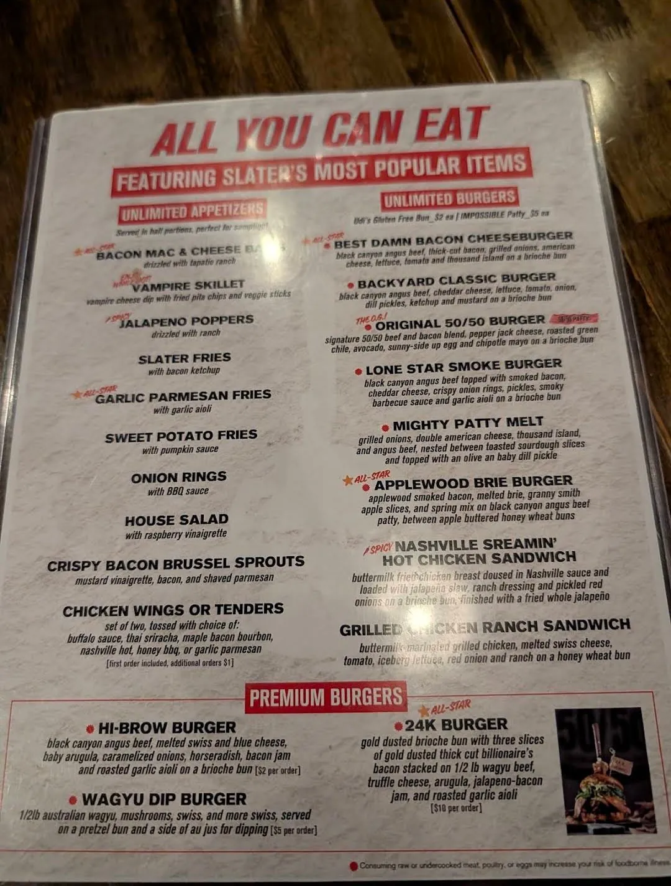
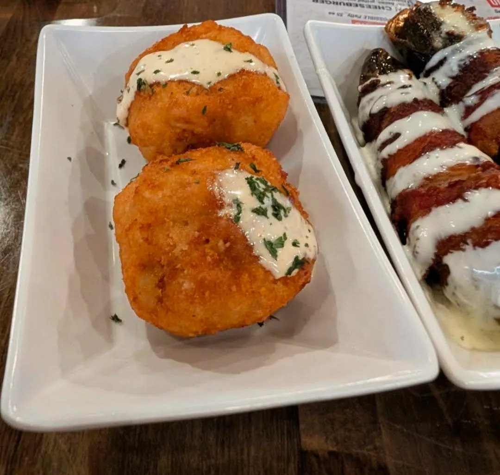
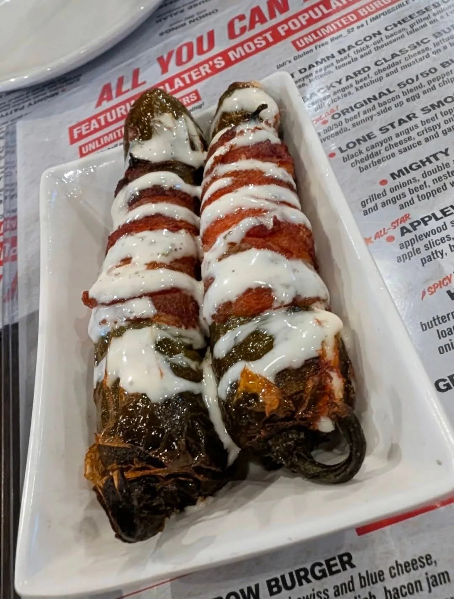
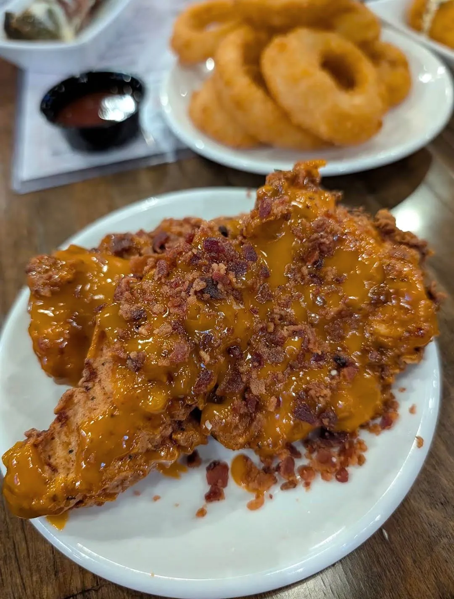
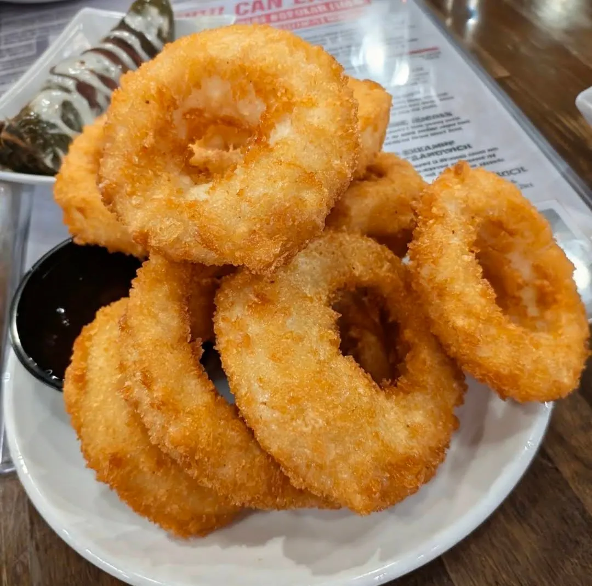

Slater's 50/50
Silverado Ranch · Burgers
467 E Silverado Ranch Blvd Ste 100, Las Vegas, NV 89183
Rating: 5/5
Slater’s 50/50 is such a great spot in Las Vegas, especially since it’s a little off the Strip. It’s nice to escape the crowds and enjoy a more relaxed atmosphere while still getting amazing food. I came here a few years ago and thought it was just okay at the time, but coming back now was a completely different experience—in the best way possible. Today, everything was absolutely awesome.
The burgers are excellent, and their bacon really stands out—crispy, flavorful, and clearly high quality. You can tell they take pride in it. The appetizers are just as impressive, especially the fried mac and cheese balls, which were fantastic: perfectly crispy on the outside and creamy on the inside.
They also offer an AYCE special for $28 that includes all-you-can-eat burgers and appetizers, which is an incredible value for the quality and portions you get. Everything we tried was so, so good, and the food came out fresh and well-prepared.

On top of that, the service was wonderful—friendly, attentive, and made the whole experience even better. Slater’s 50/50 is definitely worth a try if you’re looking for great burgers, killer bacon, delicious apps, and a solid deal away from the Strip. I’ll absolutely be back! 🍔🥓
Lone Star Smoke Burger · Jalapeño Poppers · Mac & Cheese Balls · Chicken Tenders with Bourbon BBQ · Onion Rings (AYCE)





About the place
Slater's 50/50 started in Anaheim Hills, California, where founder Scott Slater created the namesake 50/50 patty: half ground beef, half ground bacon. The Las Vegas restaurants are locally owned by husband-and-wife franchisees Andy Kao and Cindy Sun, who opened this Silverado Ranch location as the first in Las Vegas and later added a second in the northwest. Besides burgers, the menu covers loaded appetizers, over-the-top milkshakes and about 50 craft beers on tap. It's open daily from 11 a.m. to 10 p.m., with weekday happy hour from 3 to 6 p.m. and trivia on Wednesday nights (checked October 2026). The main dining room is family-friendly; the bar area is 21 and over.
What other diners say: On Yelp and Google, reviewers mostly praise the big, juicy burgers, the bacon, the shakes and the beer list, and many call out the mac and cheese balls. It's described as lively and sports-bar loud, especially on game days. Opinions on service vary: many name friendly, attentive servers, while some mention slow or inconsistent service at busy times.
What to order: A burger with the 50/50 patty, the bacon mac and cheese balls, and a milkshake.
Sources: the restaurant's website, Eater Vegas, Yelp and Google reviews. Summaries are paraphrased, not quotes.
Comments
Leave a comment with just your name, or sign in with Google.